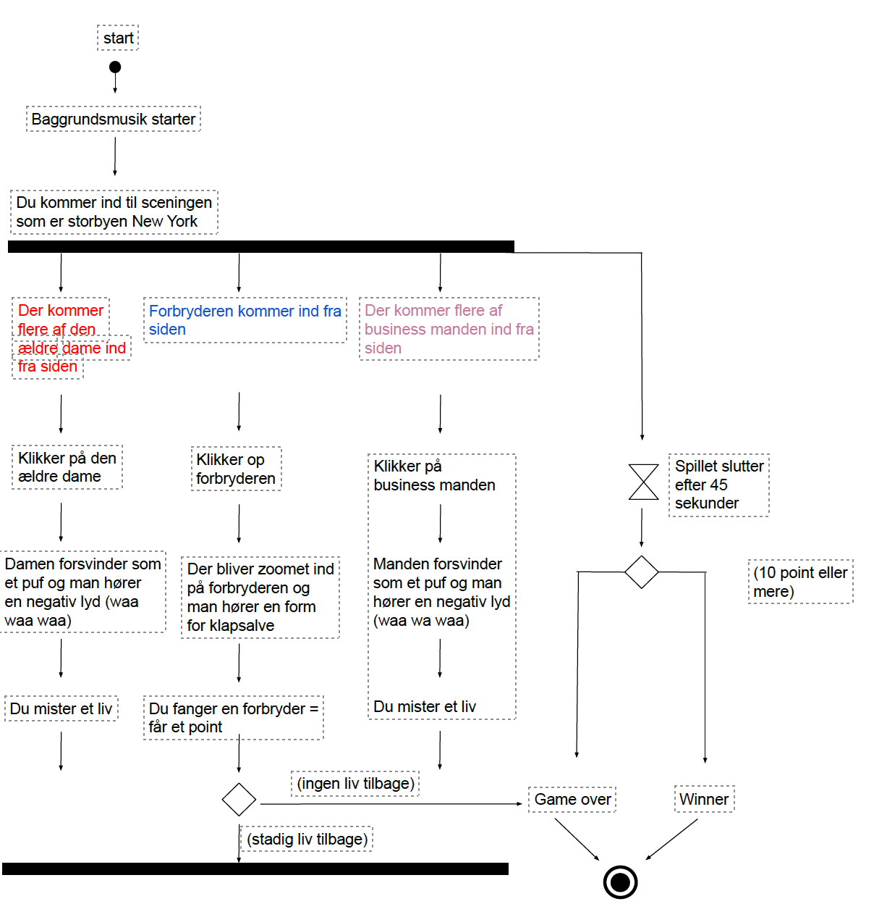

Teknik
Aktivitetsdiagram
Spil pitch
Fangere er løs i den pulserende storby New York. Du skal hjælpe politiet med at fange de løssluppent fangere. Pas på med at fange de civile mennesker, da det kan føre til erstatning for uberettiget anholdelse. Du skal fange et minimum antal fanger men husk at skynd dig, før de slipper væk.
